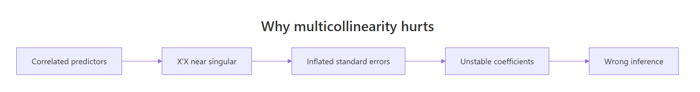
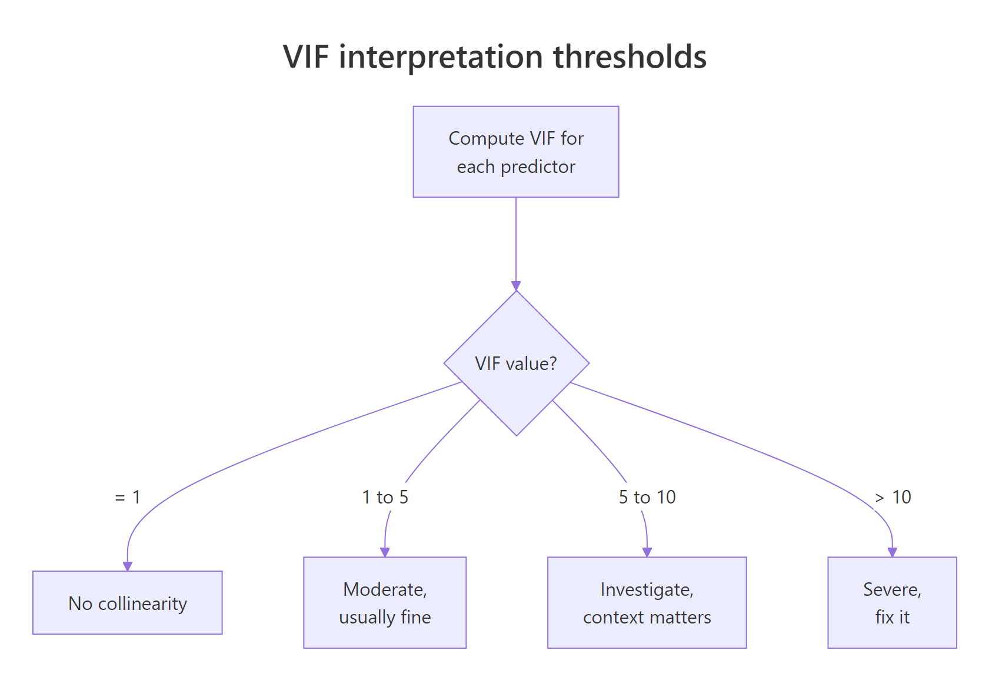
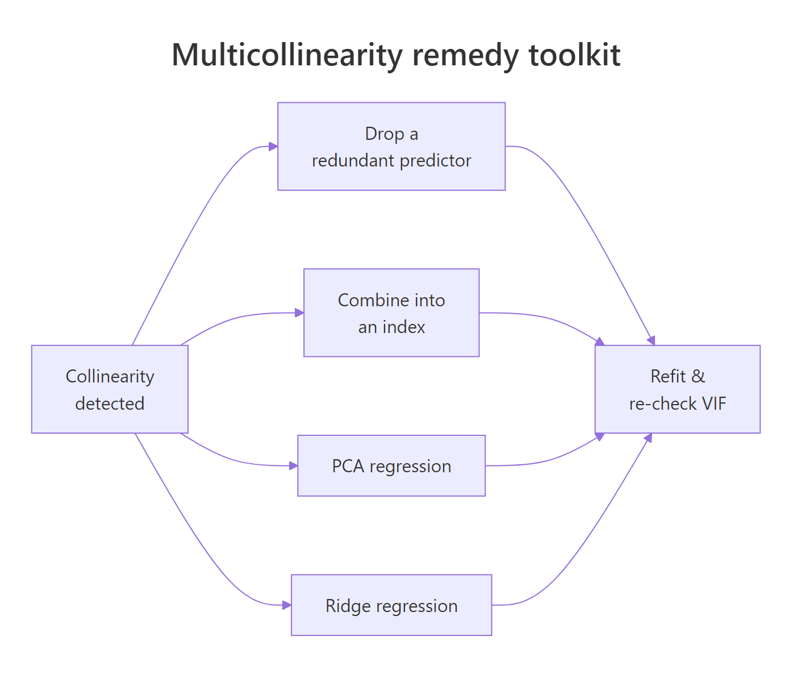

Multicollinearity in R: Detect It With VIF Before It Corrupts Your Coefficients
Multicollinearity happens when two or more predictors in a regression are highly correlated, which inflates standard errors and makes coefficients swing wildly between datasets. You detect it in R with the Variance Inflation Factor (VIF), and you fix it by dropping a redundant predictor, combining correlated variables into principal components, or switching to ridge regression. This tutorial uses base R and lm() for the live code; car::vif() is the production detector you would reach for in RStudio.
What does multicollinearity do to your regression?
Multicollinearity is easiest to feel before it is defined. When two predictors measure nearly the same thing, the regression cannot tell which one deserves credit, so coefficients lurch every time you add or drop a variable. Let's fit two models on mtcars that differ by a single predictor and watch the other coefficients move.
Here the two fits look almost identical, which is the polite version of the problem. Even so, the hp coefficient moves slightly and disp collapses to essentially zero. In a more collinear dataset that tiny nudge becomes a sign flip, and the regression story you tell in the report changes completely.

Figure 1: How correlated predictors destabilise coefficient estimates.
The instability shows up most clearly in the confidence intervals. When two predictors share information, the regression splits that information between them and every standard error gets bigger.
The interval for disp crosses zero cleanly: the sign could be positive or negative depending on the sample. That is not a strong signal about displacement, it is a signal that hp + wt + disp carries three labels for one and a half pieces of information.
Try it: Fit lm(mpg ~ cyl + disp + hp, data = mtcars) into ex_model. Then fit ex_model_drop after dropping cyl. Compare the two coef() outputs and report which coefficient changes the most in absolute value.
Click to reveal solution
The disp coefficient drops from -0.019 to -0.030 once cyl is removed, and hp almost doubles. Because cyl, disp, and hp all describe engine size, pulling one out forces the others to carry its weight.
How do you compute VIF in R?
The Variance Inflation Factor gives you a number for the instability you just saw. For each predictor, VIF asks a simple question: how much of this predictor can the other predictors already explain? If the answer is "almost all of it", the regression cannot recover a clean coefficient for it.
The formula comes from an auxiliary regression:
$$\text{VIF}_j = \frac{1}{1 - R^2_j}$$
Where:
- $\text{VIF}_j$ = Variance Inflation Factor for predictor $j$
- $R^2_j$ = the R-squared you get from regressing predictor $j$ on all the other predictors
- $1 - R^2_j$ = the fraction of predictor $j$ that the other predictors cannot explain
When $R^2_j$ is close to zero, the predictor carries unique information and VIF is close to 1. When $R^2_j$ climbs toward 0.9, VIF shoots up past 10 and the coefficient is riding on a sliver of independent variation.
You can build VIF from first principles with a short loop of lm() calls.
Three numbers, three stories. hp has a VIF of 2.74, a mild dose of redundancy. wt sits at 4.84, right on the border of the "investigate" zone. disp lands at 7.32, which is why its confidence interval earlier swung through zero. The model tries to attribute mpg changes to displacement, but nearly 86 percent of displacement can already be predicted from horsepower and weight.

Figure 2: How to interpret a VIF value against the standard thresholds.
In everyday practice you would not hand-roll the VIF loop, you would reach for the car package. It adds factor support and a consistent return shape, and it is what most regression books reference.
library(car); vif(model_full) in RStudio to get the same numbers. The car package is not pre-compiled for the browser runtime on this page, so the examples use the manual formula instead. Both approaches give identical values; the manual loop shows what the function is doing under the hood. Install once with install.packages("car") and the function is available for every future project.Try it: Write a function ex_manual_vif(target, predictors, data) that returns the VIF for one variable using the auxiliary-regression formula. Test it on ex_manual_vif("wt", c("hp", "wt", "disp", "qsec"), mtcars) and confirm the value is above 5.
Click to reveal solution
A VIF of 6.74 lands wt firmly in the investigate zone. In this extended predictor set, weight shares enough variance with horsepower, displacement, and quarter-mile time that its coefficient is no longer stable.
How does VIF work for categorical predictors (GVIF)?
A factor with $k$ levels becomes $k-1$ dummy variables inside lm(), so a single VIF per dummy is misleading. You could get a low VIF for each dummy individually while the whole factor is collinear with something else in the model. The fix is the Generalised Variance Inflation Factor (GVIF) and its adjusted form, $\text{GVIF}^{1/(2\,\text{Df})}$, which lets you compare factors with numeric predictors on the same scale.
The adjusted GVIF is designed so that its threshold mirrors the usual VIF rule. A $\text{GVIF}^{1/(2\,\text{Df})}$ near 1 means no collinearity, and the value $\sqrt{5} \approx 2.24$ corresponds to the usual VIF threshold of 5. Readers with a stats background can think of it as the VIF you would see if the factor were collapsed back to a single numeric variable.
Let's fit a model with factor predictors on mtcars and inspect the regression output.
The tall standard errors on the factor(gear) dummies and their non-significant F-test are the tell: once cylinder count is already in the model, the gear levels carry little unique information. If this were a real project you would either drop gear, group rarely-used levels, or check whether a single cylinder-and-gear interaction explains the same signal with fewer parameters.
car::vif() returns three columns for factor models. With factors in the model, vif(model_factors) returns a matrix with columns GVIF, Df, and GVIF^(1/(2*Df)). Read the third column, not the first, when you compare against the usual thresholds. Calling vif(model_factors) on a numeric-only model gives a plain vector, which matches the manual formula above.Try it: Fit ex_binary_model <- lm(mpg ~ factor(am) + factor(vs) + hp, data = mtcars). Look at summary(ex_binary_model) and report whether am and vs appear to carry overlapping signal (hint: check the standard errors and cor(mtcars$am, mtcars$vs)).
Click to reveal solution
The correlation between am and vs is only 0.17, and both factor coefficients are significant with moderate standard errors. In this model the two binary factors behave independently enough to keep. Collinearity becomes a concern when that correlation climbs above about 0.7.
What else signals multicollinearity beyond VIF?
VIF catches one predictor against the rest, but it can miss the case where three variables together are near-dependent even though no single pair is strongly correlated. The classic second check is the condition number of the scaled design matrix, computed with kappa(). It looks at the whole predictor matrix at once and flags near-singular geometry.
A condition number near 1 means the predictors span the feature space cleanly. Above 30 the matrix is nearly rank-deficient and coefficient estimates are numerically unstable. Always scale the predictors first; otherwise the value just reflects the units.
A condition number of 6.99 sits well below the 30 warning line, so the predictor block is not numerically unstable. The correlation matrix, though, shows the same story VIF told: disp correlates 0.89 with wt and 0.79 with hp, and drat is nearly a mirror of wt. Those high off-diagonal entries are the neighbours causing disp's high VIF.
A base R image() call turns the correlation matrix into a quick heatmap so you can scan the pairs visually.
Red cells are strong positive correlations, blue cells are strong negative. The wt-disp cell pops red, drat-wt and drat-disp pop blue, and you can read the collinearity pattern in one glance.
kappa(). Without scaling, a predictor measured in thousands (like disp) will dominate one measured in tenths (like drat), and the condition number reflects the unit mismatch rather than any real collinearity. scale() centres each column to mean zero and standard deviation one, which is the correct input for kappa().Try it: Compute ex_kappa <- kappa(scale(mtcars[, c("hp", "disp", "wt", "drat", "qsec", "cyl", "am")])). Does adding cyl and am push the condition number above 30? Report the value and interpret.
Click to reveal solution
Adding cyl and am pushes the condition number to 13.92, almost double the five-predictor value but still well below 30. The geometry is getting cramped but the design matrix is not yet singular. Watch for the number to cross 30 as you keep adding correlated engine metrics.
How do you fix multicollinearity in R?
Once you have confirmed collinearity, you have three clean options: drop a redundant predictor, combine correlated predictors into a smaller set of composite features, or switch to a regression that expects correlated inputs. Pick based on context, not reflex.

Figure 3: Four remedies for a collinear regression, with when to use each.
Remedy 1: drop the redundant predictor
The fastest fix is also the most common. If disp duplicates information that hp + wt already carry, remove it and watch the VIFs fall.
Both VIFs drop to 1.77, well inside the safe zone. The coefficients for hp and wt are now stable and the model has lost nothing meaningful, because disp was restating what they already said.
Remedy 2: combine predictors with PCA
When every correlated predictor is genuinely meaningful, summarise them into a smaller set of composite features with Principal Component Analysis (PCA). The first component captures the shared signal; regressing on components sidesteps collinearity entirely because the components are orthogonal by construction.
The first component alone absorbs 87 percent of the variance in the three correlated predictors, and regressing mpg on PC1 and PC2 gives stable coefficients with no possible collinearity between them. The tradeoff is interpretability: PC1 is a linear combination of hp, wt, and disp, not any one of them. You get stability and lose the per-variable coefficient story.
Remedy 3: shrink coefficients with ridge regression
Ridge regression adds a small penalty $\lambda$ to the sum of squared coefficients. That penalty trades a tiny bit of bias for a large drop in coefficient variance, which is exactly what collinearity makes worse. You can code the closed-form solution from scratch with base R matrix operations:
$$\hat{\beta}_{\text{ridge}} = (X^TX + \lambda I)^{-1} X^T y$$
Where:
- $X$ = the design matrix of centred and scaled predictors
- $y$ = the centred response vector
- $\lambda$ = the ridge penalty (larger values shrink coefficients harder)
- $I$ = the identity matrix
Ridge does not zero out disp the way drop-the-variable does. Instead it shrinks every coefficient toward zero, with the biggest shrinkage on whichever predictor the OLS estimate had least confidence in. The disp coefficient moves from -0.181 (tiny and uncertain) to -1.107 (a moderated share of the collinear block), and wt eases from -2.880 to -2.089.
In real projects you do not hand-pick $\lambda$ from a single number either. You cross-validate over a grid of penalties and let the data choose the one that minimises prediction error, and that is what the glmnet package is built to do.
glmnet is the production ridge path. Use library(glmnet) and cv.glmnet(X, y, alpha = 0) in RStudio to cross-validate the penalty and get the regularisation path for many lambdas at once. The glmnet package is not available in this page's browser runtime, so the examples use base R matrix ops. Install once with install.packages("glmnet") and the function is available for every future project.Try it: Drop disp from a three-predictor model and refit, then confirm both VIFs land below 5. Fit ex_model_fixed <- lm(mpg ~ hp + wt, data = mtcars) and compute VIFs manually.
Click to reveal solution
Both VIFs are 1.77, identical and safely below 5. Dropping the redundant predictor is often the simplest and most communicable remedy.
Practice Exercises
Exercise 1: Simulate collinearity
Generate two near-identical predictors and confirm that even when the true data-generating coefficients are different, the regression cannot recover them. Set the seed to 2026 for reproducibility. Save the fitted model to my_sim_model.
Click to reveal solution
VIFs of 401 tell you the predictors carry the same information. The coefficients come out close to 1.86 and 3.14, which happen to land near the true (2, 3) because the sample size is large and the noise is small. Try reducing n to 20 and you will see the two coefficients swing far from the truth despite the data being generated cleanly.
Exercise 2: Full diagnostic pipeline
On mtcars, fit the five-predictor model mpg ~ hp + disp + wt + drat + qsec. Compute manual VIFs for each predictor, the kappa() condition number on the scaled predictors, and the correlation matrix. Decide which variable to drop based on the highest VIF. Save the refit model to my_cleaned_model and print its VIFs.
Click to reveal solution
Dropping disp brings every remaining VIF below 5, which is the clean result the model was asking for.
Exercise 3: PCA remedy
Take the same five predictors from exercise 2. Run prcomp() on them (with scaling), keep the first two principal components, and fit my_pc_model <- lm(mpg ~ PC1 + PC2, data = ...). Compare the R-squared of my_pc_model with that of my_full from exercise 2.
Click to reveal solution
Two principal components capture 91 percent of the predictor variance and explain 82.5 percent of mpg variance. The five-predictor model explains 85.1 percent, barely better. The PC model is more stable and barely less accurate, which is usually the right trade when collinearity is high.
Complete Example
The longley dataset is a small economic time series from 1947 to 1962 and is the textbook example of multicollinearity. Let's run the full pipeline end to end.
Every VIF in the full model is in the three-digit or four-digit range, and the condition number of 43.3 confirms a near-singular design. Dropping the worst offender, GNP, barely helps: Year and Population still have VIFs in the hundreds because the dataset is a tight economic time series where everything trends together.
The right answer for longley is not a single drop. You would keep one time-series indicator (usually Year), combine the economic variables into an index or principal component, and accept that six nearly-identical trend variables cannot be separated even by the most careful regression. This is the lesson the dataset was built to teach.
Summary
| Step | What to run | What it tells you |
|---|---|---|
| Detect instability | lm() full vs reduced + confint() |
Coefficients that swing or cross zero signal collinearity |
| Quantify | Manual VIF loop or car::vif(model) |
VIF > 5 is worth investigating, > 10 is urgent |
| Confirm with a second lens | kappa(scale(X)) and cor(X) |
Condition number > 30 is collinear even with low VIFs |
| Factors | car::vif(model) and read GVIF^(1/(2 Df)) |
Compare to VIF thresholds via the adjusted column |
| Fix | Drop / PCA / ridge | Drop for clarity, PCA to combine, ridge for prediction |
The short version: run lm(), read the VIFs, confirm with kappa() and cor(), then pick the remedy that matches what you need from the model. Causal interpretation of a single coefficient means drop or combine. Accurate prediction with every predictor kept means ridge.
References
- Fox, J. & Weisberg, S., An R Companion to Applied Regression, 3rd edition. Sage (2019). Chapter on regression diagnostics and the
carpackage. Link - Kutner, M. H., Nachtsheim, C. J., Neter, J. & Li, W., Applied Linear Statistical Models, 5th edition. McGraw-Hill (2005). Chapter 10: Multicollinearity and its effects.
- Hoerl, A. E. & Kennard, R. W. (1970). Ridge regression: Biased estimation for nonorthogonal problems. Technometrics, 12(1), 55-67. Link
- Belsley, D. A., Kuh, E. & Welsch, R. E., Regression Diagnostics: Identifying Influential Data and Sources of Collinearity. Wiley (1980). The condition-number reference.
- James, G., Witten, D., Hastie, T. & Tibshirani, R., An Introduction to Statistical Learning with Applications in R, 2nd edition. Springer (2021). Chapter 3: Linear Regression. Link
- CRAN,
car::vif()reference page. Link - Longley, J. W. (1967). An Appraisal of Least Squares Programs for the Electronic Computer from the Point of View of the User. Journal of the American Statistical Association, 62(319), 819-841.
Continue Learning
- Linear Regression, the full
lm()workflow from fitting to interpretation, for when you want to make sure the base model is solid before reaching for diagnostics. - Variable Selection and Importance With R, a broader look at feature selection methods beyond VIF, including stepwise selection and importance metrics.
- Outlier Treatment With R, another core regression diagnostic; collinearity and outliers often interact and are best handled together.